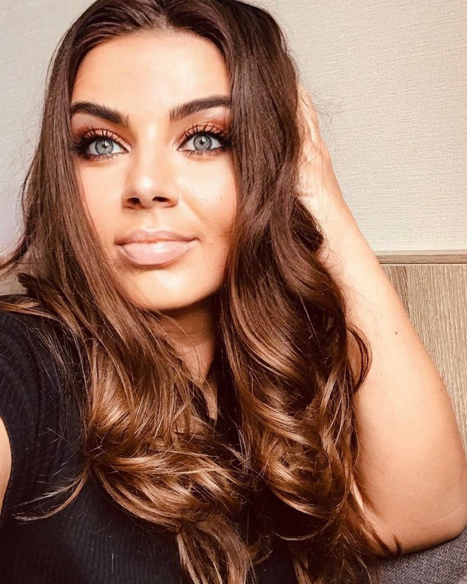

We all deserve to feel good in our own skin and makeup can give us that uplift when we need it the most
 My main passion for what I do stem’s from creating confidence in women. I am a massive “Girl power” fan. If I can make a woman on her wedding day look but most importantly “Feel” amazing then today has been a success! Each and every person has something unique and beautiful about them - it is my job to polish that uniqueness using subtle yet effective makeup techniques that will create that flawless radiant finish to your makeup. I love trying various hairstyles as this pushes me creatively but ultimately I would say my style is quite Undone. I love tumbling romantic waves and loose relaxed up-styles that are not massively fussy but have some texture and attention to detail. I adore flowers in the hair as well as interestingly adorned hair pieces. My makeup style is very much about enhancing your natural beauty rather than masking it. I am making a difference to how that person feels and it gives my clients a massive confidence boost. I get to make amazing women look great on such a happy day of their life. Nothing beats that job satisfaction. I feel incredibly privileged to be acknowledged for my makeup skills by all of my brides. I love tumbling romantic waves and loose relaxed up-styles that are not massively fussy but have some texture and attention to detail. I adore flowers in the hair as well as interestingly adorned hair pieces. My makeup style is very much about enhancing your natural beauty rather than masking it. I am making a difference to how that person feels and it gives my clients a massive confidence boost.
Look your best and be the center of attention
Capture your best version with the right makeup
Find the best makeup for your skin